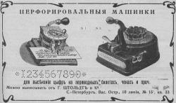
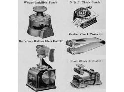

1. Перфорировальная машинка, их еще называли чекрайтерами или чекпротекторами. Изображение взято с рекламы:

Другие подобные приспособления – внешний вид у всех разный, надо заметить:

2. Всего лишь держатель для карандашей, виды сбоку и сверху:
3. Тоже для карандашей – удлинитель. Огрызок держать неудобно, вываливается из пальцев, а с удлинителем – никаких проблем.
4. Если догадались, то молодцы, а я бы ни за что не догадался. Канцелярско-гигиеническое средство: смачиватель марок и конвертов.
Испугались заразы? Бегите скорей, адрес продавца указан: С.-Петербург, Литейный, 55.
Вот, кстати, другие устройства аналогичного назначения:
5. Нет, это не первая модель мобильника «Нокиа» – это автоматический адресно-телефонный справочник. А телефонный круг зачем? Ну как вы не понимаете, справочник же автоматический: набираешь номер, и справочник открывается на нужной странице. Только не спрашивайте, как устроено, – не знаю. В первоисточнике, старой журнальной статье, было так написано: за что купил, за то продаю.
6. И самое сложное. На последнем рисунке изображена так называемая счетная бухгалтерская линейка, не путать с логарифмической. Как я предупреждал, устройство чисто бухгалтерское, решает задачу быстрого переписывания цифр из одной ведомости в другую. Как работает бухгалтер без такой счетной линейки? Мучается, так как постоянно путает нужные строки, которые мельтешат перед глазами. А со счетной линейкой легче легкого: заранее устанавливаешь лепестки в нужных позициях, прикладываешь к ведомости и – как все изменилось! – ненужные строки оказались закрытыми для обозрения, а нужные открытыми. Вот так приблизительно.
Теперь ошибиться сложно. Конечно, способ эффективен лишь для однотипного переписывания – многие бухгалтеры, впрочем, так и работают.
Помимо счетных бухгалтерских линеек, для просмотра ведомостей использовались и устройства попроще, типа картонок с прорезанными отверстиями:
Принцип действия тот же, что у счетной линейки, но изготавливать куда легче.
Спасибо, на сегодня все. Надеюсь, хабравчанам еще не осточертело ретро.
{kind=link}
{kind=link}
{kind=link}
{kind=link}
{kind=link}
{kind=link}
{kind=link}
{kind=link}
{kind=link}
{kind=link}
{kind=link}